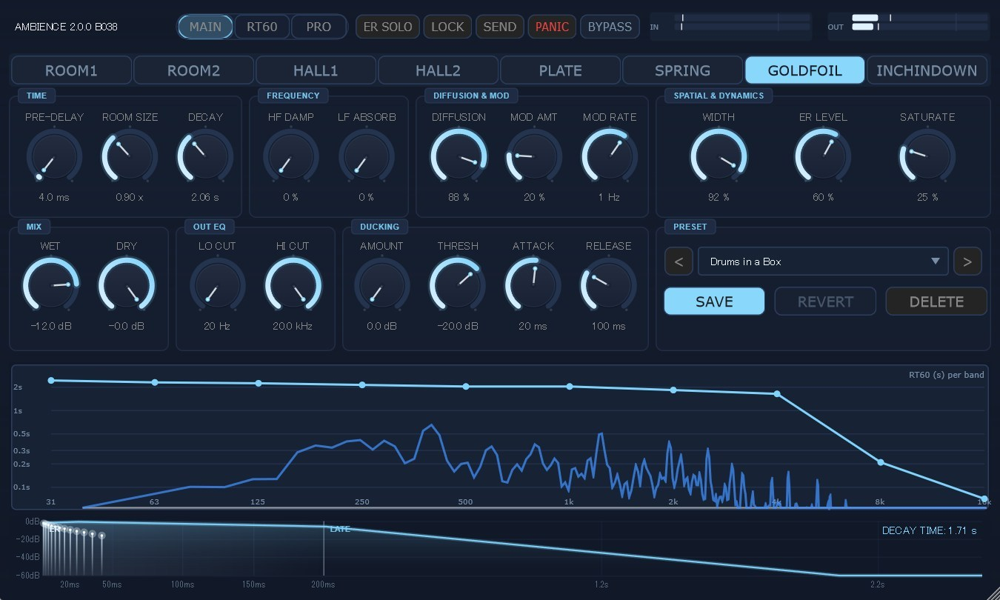

AMBIENCE
空間の美学を極める。
全8アルゴリズムを帯域ごとに再校正し、後期残響はトゥルーステレオに。金属的な共鳴を抑え、ピッチの揺れない変調へ。16ch FDN & SDN ハイブリッド、104プリセット、最大200秒。
AMBIENCE v3.1.0 4-TAB WORKSTATION DECK

MAIN ビュー：8アルゴリズム＆トゥルーステレオ音響空間
10 COLOR THEMES // SCALABLE 80%–150%ROOM1/2・HALL1/2・PLATE・SPRING・GOLDFOIL・INCHINDOWNの全8アルゴリズムを統合。独立L/Rの後期残響ネットワーク、ピッチの揺れないSmoothed-Random変調、ADAAサチュレーション、ダッキングを直感的に操作します。
8 FEATURE HIGHLIGHTS // 機能ハイライト
16ch FDN & SDNハイブリッドの土台をv3.0.0で帯域ごとに再測定・再構築した8つの革新。
トゥルーステレオ後期残響
v3.0.0で全8アルゴリズムの後期FDNネットワークを左右独立（L/R）へ分割。擬似ステレオ化ではない本物の左右定位と自然な非対称包み込み感を実現しました。
全8アルゴリズム帯域再校正
ROOM1/2・HALL1/2・PLATE・SPRING・GOLDFOIL・INCHINDOWNを帯域別に再測定。PLATE/SPRING/GOLDFOILの金属的共鳴（リンギング）を徹底抑制しました。
ピッチの揺れない変調＆ユニタリ回転
周期的なサイン波変調を廃止し、Smoothed-Random変調とUnitary帰還行列回転を新採用。深いMOD AMTでも音程が揺れず、残響だけが有機的に息づきます。
6段再設計インプットディフューザー
段ごとのテーパリングを施した素数ディレイ集合の6段ディフューザーへ刷新。鋭いパーカッション入力でも粒立ちのない滑らかで高密度な立ち上がりを生みます。
2倍オーバーサンプリング ADAA 歪み
Warm / Tape / Tube / Hard の4モードにADAA＋2倍オーバーサンプリングを統合。特にTUBEモードは偶数次倍音主体へ再調整し、極上のアナログ感を付与（48サンプルPDC通知対応）。
6種のPRO音響物理コントロール
Scattering / ER Crossover / Late Density / Asymmetry / Clarity / Air Absorbを搭載。v3.0.0ではER減衰法則を統一し、全アルゴリズムで一貫した物理変化が得られます。
対数RT60＆音響メトリクス可視化
0.05秒〜200秒を自動スケールする10バンドRT60グラフ、ER/Late分割ディケイ曲線、Dry/Wetスペクトラム、さらにスタジオ計測指標D50 / C50 / C80 / EDTをリアルタイム表示。
104マスタープリセット＆3カラムブラウザ
8アルゴリズム×13種の104プリセットを収録。[ROOM]空間別と[TAGS]楽器別を切り替えるハイブリッドブラウザ、お気に入り★、全文検索、REVERTを完備。
RESEARCH-GRADE REVERB ARCHITECTURE // 内部DSPアーキテクチャ
Schroeder/Moorer/Jotの古典的構造にとどまらず、学術文献に基づくFWHTユニタリ帰還行列、Välimäki-Liski 10バンドGEQ吸収、そしてv3.0.0のトゥルーステレオFDN×SDNハイブリッドを統合しました。
16ch トゥルーステレオ FDN ＆ ユニタリ変調
対数配置された互いに素な素数ディレイラインとFWHT帰還行列に、v3.0.0では独立L/Rネットワークと緩やかに変化するUnitary行列回転を実装。ピッチを一切揺らさずに空間の密度と立体感を最大化します。
10バンド Biquad GEQ 吸収＆64bit精度
各FDNチャンネルに10バンドBiquad GEQを直列接続し、重み付き最小二乗法（WLS）で目標RT60カーブへ高精度追従。64-bit倍精度演算とPing-Pongクロスフェードにより、最長200秒のテールでも量子化ノイズやツマミ操作時のクリックを排除します。
実戦堅牢設計＆1,200件自動音響検証
オーディオスレッド上のヒープ確保ゼロ、Dirty-FlagによるWLS演算抑制、Hermite分数ディレイ補間、Ableton Liveの非同期サンプルレート変更保護を実装。1,200パターンの自動音響検証を通過したスタジオ標準の安定性です。
Input (Stereo L/R)
│
├─► [Mid/Side Decorrelation Matrix]
│
├─► [Input Diffusers × 6 Stages (Prime-Number Tapering)]
│
├─► [SDN / ISM Early Reflections Engine (Graceful 20ms Bypass)] ────────┐
│ │
└─► [16-Channel True-Stereo FDN Core (Independent L/R Networks)] │
├─► FWHT Unitary Feedback Matrix + Slow Unitary Rotation │
├─► Smoothed-Random Modulation Sources (Pitch-Solid) │
├─► Dual-State 10-Band Biquad Absorption Filters (Välimäki-Liski) │
├─► Internal Padé Micro-Saturation Safety Loop │
└─► 3-Stage Nested Allpass Dispersion Chains │
│ │
└─► [ER Mix + Late FDN Mix] ◄────────────────────────────┘
│
[2x Oversampled ADAA Saturator: Warm / Tape / Tube / Hard]
│
[Output EQ: Lo/Hi Cut & Shelf] ──► [-0.5 dBFS Brick-Wall Limiter]
│
[Dry Signal × SmoothedGain] ───────────────────┼─► Final Stereo Output
YOUTUBE SHOWCASE // デモ動画
動作環境・システム要件（Windows / Ableton Live 専用）
本プラグインは Windows 10 / 11 (64-bit / AVX2必須) および Ableton Live 11 / 12 をメインターゲットとして開発されています。Ambience.vst3 を C:\Program Files\Common Files\VST3\ にコピーして再スキャンするだけで即座に動作します。